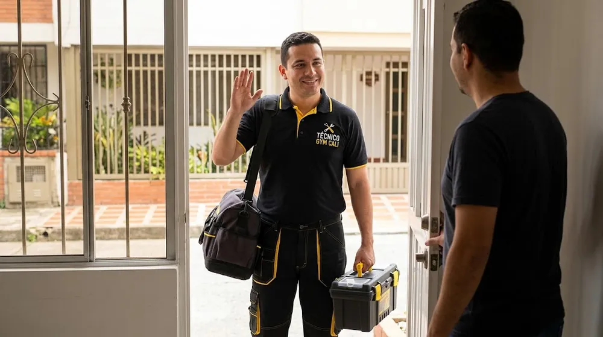

Vamos a donde estás
Atendemos a domicilio en Cali. Escríbenos tu barrio por WhatsApp y confirmamos la visita. Estas son algunas zonas desde donde nos escriben: Ciudad Jardín, Pance, Valle del Lili, Granada, San Fernando y Versalles.
Cómo encontrarnos
- Escríbenos por WhatsApp al 321 799 6144.
- Dinos tu barrio, el equipo y la falla.
- Coordinamos el día y la hora.
Mira todas las zonas de Cali.
Equipos que revisamos
Caminadoras, bicicletas, elípticas, escaladoras y multifuncionales. Mira la lista completa.
Preguntas frecuentes
¿Cuánto tarda en llegar el técnico?
Depende de la zona y de la agenda. Te lo confirmamos al coordinar la visita.